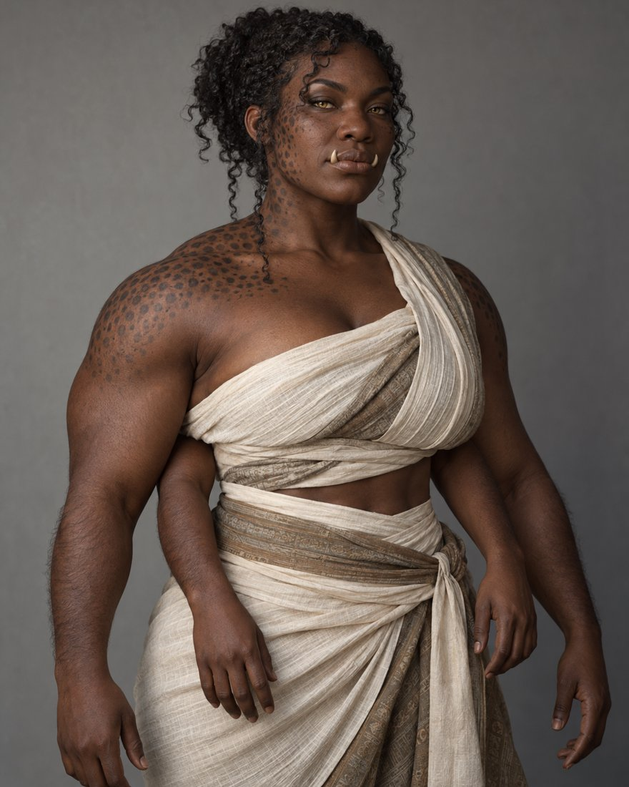

Dorrwfø

Five sovereign clans on the southern continent, a seafaring, four-armed people with no crown to sign a treaty for them.
Lines without a tag are settled canon from the Kanna reference documents. Tags mark anything less settled.
- Land
- The southern continent, from 18 to 50°S
- Government
- Five fully separate clans. There is no paramount chief.
- Language
- Dorrwfø, with Icelandic-leaning conservative consonants. Script undocumented.
- Skin
- #351e10, a warm charcoal red-brown called Hickory. Clan markings run about two shades darker than the wearer's own base.
- Body
- Four arms, tusks, horizontal-slit pupils and clan markings on the skin
- Anatomy mix
- About 40% dual-set, 60% dimorphic and 3% intersex. The dual-set share fell to about 20% during the wars with the Rejfê and Kannafê. Decided
- Clothing
- Thai
- Lifespan
- 80 to 250 years, the shortest of the peoples, from constant conflict
The five clans
| Clan | Native territory | Place | Character |
|---|---|---|---|
| Wave | βongeheleð (Vhongeheledh) | North coast, the Crossing Gate | Sailors, navigators, raiders and long-distance traders. They control the maritime passage as a toll of risk, not a lock. |
| Claw | Salaɫiβo (Salalhivho) | West, arid coast | Cold-upwelling fisheries. Maritime despite a dry hinterland. |
| Thunder | Zaziɫiβo (Zazilhivho) | East, monsoon coast | Wetter, greener and heavily forested, with a storm regime. |
| Fire | ðavþɯr̥mˠote (Dhavthwrhmhote) | The Dry Heart, central desert | The outcast clan. Caravan and covert trade routes. See below. |
| Leopard | Kojisað (Kojisadh) | The temperate south | The coolest and most fertile land, the agricultural heartland, and home to the oldest major sacred tree. Enviable, not authoritative. |
No paramount chief
- Clans cooperate only through occasional treaties. There is no apex authority and no seat to inherit or contest, which is deliberately unlike the Rejfê rotating High King.
- Outsiders complain that the Dorrwfø sign treaties and then raid anyway, claiming it was a clan, not the crown. There is genuinely no crown. The charge of duplicity comes from misreading a political structure they do not understand.
- It also fits the chief-in-the-tree belief. A chief tied to one tree and buried at its roots is local by nature. You cannot rule five regions from inside a tree in one of them.
The four old clans
- Wave, Claw, Thunder and Leopard are sacred hereditary dynasties. Each traces its authority to a founder who planted the clan's sacred tree. The ruling bloodline has drunk from that tree ever since, a real and compounding biological and magical advantage.
- Ruling children train from youth in combat, endurance, clan law, ritual duty, local survival skills and diplomacy. They are not decadent aristocrats.
- Ruling families hold regular friendly bouts. Each is training, a prestige contest, political theatre, matchmaking and a way to size up rivals. A defeat, injury or insult read as weakness can tip a bout into war, so sanctioned bouts need strict ritual rules, witnesses, stopping conditions and limits on killing or maiming heirs.
Fire: exile, not settlement
- Every other clan has a story of migration. Fire has only a sentence. The Dry Heart was chosen as exile land because it was harsh and expected to kill or contain whoever was sent there. The founders were Dorrwfø rejected, suppressed or expelled by the other clans, and they survived long enough to plant a sacred tree.
- The first Fire chief took power by dominance, not lineage or election. Fire succession is hereditary continuity without hereditary security: the chief's child holds a privileged but insecure claim, and anyone may challenge. If the challenger wins, they live at the tree, gain its power, and found the next line. The tree belongs to the office, never permanently to one bloodline.
- Fire is more mobile than the other clans, but only for those who are strong, useful, clever, magical, ruthless or charismatic. Birth does not cap how high you can rise, but weakness gets little protection. For anyone who cannot prove their use, Fire can be harsher than the hereditary clans.
- Dorrwfø intersex people are mostly forced into Fire, and treated as a lower-class laborer caste everywhere else. Fire likely has the highest share of them. Decided
- The other clans publicly treat Fire as degraded or disposable, while privately relying on them for dangerous work they do not want attached to their own prestige. Many Fire members work in liminal trades: caravans, long-distance trade, black-market shops, smuggling, mercenary work, brokering and discreet go-between roles. The Dry Heart is not an empty wasteland but a covert network hub whose public reputation understates its real reach.
The contrast to preserve: the four old clans prove legitimacy by lineage. Fire proves it by continued dominance. When a Fire challenger beats someone from an old founder dynasty, the insult is especially severe. Canon
What binds them without governing them
- The universal rite. The temperate south is sacred to all five clans, because every clan began there. Young members of any clan may always travel there to hunt the Boskamyra in season, as a rite of passage that holds no matter who is at war with whom.
- Cooperation is real but always pairwise and conditional. Marriages and festivals are shared bilaterally with whichever clans are currently at peace.
- The crossing is a toll, not a lock. Other clans can sail further east or west to bypass Wave ships. It is simply more dangerous, and someone desperate enough will take the eastern route and may not come back.
Crossing the Burnt Belt
The Dorrwfø sail around or through the Belt and never live in it. They time voyages to the cooler hours and seasons, carry large freshwater reserves, build shaded ships for airflow, and hop between sea refuges. Their bodies help: the best eyesight in the family, ears adapted to the sea, and coarse body hair that reads wind, current and pressure. They are not immune to lethal wet-bulb heat. They are simply the people best equipped to attempt the one place where crossing is survivable at all. Canon
Ancestor practice
The chief lives in the sacred tree. Sap plus a few drops of blood make a ritual wine that is generally shared, while only the chief's own family eats the fruit. The chief is buried at the roots at death, which links the office to that ground and is another reason no Dorrwfø chief could rule paramount from elsewhere. Canon
Clan markings
Every Dorrwfø has melanistic skeletal patterning from birth, about two shades darker than their base skin. It follows the bones (jaw, collarbone, shoulder blades, spine, ribs and hips), flows like natural organic lines, and identifies the clan. Canon
| Clan | Marking |
|---|---|
| Leopard | Dense freckling across the shoulders and up the neck and jaw. Spots rather than lines, the most animal reading, with visual weight on the upper body and face. |
| Claw | Jagged slash marks across the torso, arms and face. Angular and aggressive, most striking in combat. |
| Wave | Curling marks that follow horizontal body contours: ribs, hips and shoulders. Probably the strongest maritime identity. |
| Fire | A large chest mark narrowing upward in a curving flame to the neck, with wisps along the collarbone and shoulders like dissipating smoke. All the energy draws up to the throat. |
| Thunder | Jagged bands on the lower body and abdomen, with lightning mapped to the pelvis, thighs and lower ribs. All the weight sits low, powerful and grounded. |
Body
- Gestation
- 8 to 10 months
- Pupil
- Horizontal slit
- Iris
- Cool yellow or pale gold
- Ears
- Slightly adapted for sailing and swimming; they love being scratched by loved ones
- Tongue
- Longer, slightly flat, purple-black, rough
- Blood
- Burnt orange (vanadium-adjacent, maritime chemistry)
- Nose
- The flattest in the family
- Teeth
- Tusks
- Arms
- 4 (the second pair sits below the pectorals and has four fingers)
- Spine
- Flexible thoracic spine for swimming and rowing, reinforced lumbar for combat, wide thoracic vertebrae for the four-arm shoulder girdle
- Joints
- Human typical
- Strongest sense
- Sight (best in the family)
- Body hair
- Visible coarse hair that senses wind, current and pressure
- Build (masc)
- Linebacker
- Build (femme)
- Tailback or halfback
- Height
- 5'9" to 6'10"
- Height by sex
- Masc 1 to 4 inches taller than femme
- Skin tone
- #351e10 (Hickory) base, warm charcoal red-brown
- Markings
- Melanistic skeletal patterning from birth that identifies the clan
- Lifespan
- 80 to 250
- Active period
- Maritime rhythms set by tide and weather
How the land was held
The Dorrwfø once held a far broader share of Kanna before Rejfê and Kannafê systems pushed them south. A possible older map: Leopard held most of the southern continent, Wave once held what is now Ostirynd and Hestirynd, Thunder lived along the Havdèl coast, and Claw lived along the western Rejfê coast. Fire formed later as an exile population and was never an original clan. Proposed
Still to decide
- Whether Fire's real power is respected, feared or flatly denied by the other four clans. Open
- The historical displacement account above, which is still only possible. Open
- Sentence structure, and the script. Open